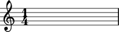

The Abjad Skip class
The Abjad Skip class wraps the LilyPond skip object. LilyPond skips represent unprocessed periods of musical time, somewhat like invisible rests.
Public interface
Attributes
NOT IMPLEMENTED.
Read / write attribute inherited from _Leaf.
Returns Abjad _ArticulationsInterface.
Accepts Python list of zero or more LilyPond articulation strings, None.
See example.
Read / write attribute inherited from _Component.
Returns Abjad _BarlineInterface.
Accepts LilyPond barline string, None.
See example.
Read / write attribute inherited from _Leaf.
Returns Abjad _ClefInterface.
Accepts LilyPond clef string, Abjad _Clef instance, None.
See example.
Read / write attribute inherited from _Leaf.
Returns Abjad _LeafDurationInterface.
Accepts duration token.
See example.
Read / write attribute inherited from _Leaf.
Returns Abjad _DynamicsInterface.
Accepts LilyPond dynamics string, None.
See example.
abjad> rest = Rest((1, 4))
abjad> rest.formatter _LeafFormatter
Read / write attribute inherited from _Leaf.
Returns Abjad _GlissandoInterface.
Accepts True, False.
See example.
Read-only attribute inherited from _Leaf.
Returns Abjad _HarmonicInterface.
Accepts True, False.
See example.
Read / write attribute inherited from _Component.
Returns Abjad _TempoInterface.
Accepts (duration, type) pair.
See example.
Read-only attribute inherited from _Leaf.
Returns Abjad _TieInterface.
Accepts True, False.
See example.
Methods
kind(classname)
Deprecated public method inherited from _Component
Returnx True if classname in class hierarchy of self, otherwise False.
Use built-in Python isinstance instead.
Overloads
__init__(args*)
Special method defined here.
Initialize self according to one of several input argument patterns:
-
Skip(dur)Skip(note)Skip(chord)Skip(skip)
Where dur is an Abjad duration token.
abjad> skip = Skip((1, 4))
__mul__(n)
Special method inherited from _Component.
Implements left-handed multiplication of self.
Returns a Python list of n copies of self.
See example.
__repr__
Special method defined here.
Returns string summary of self for interpreter display.
abjad> skip = Skip((1, 4))
abjad> skip Skip(4)
__rmul__(n)
Special method inherited from _Component.
Implements right-handed multiplication on self.
Returns a Python list of n copies of self.
See example.
abjad> skip = Skip((1, 4))
abjad> str(skip) 's4'
See the
Skipclass inskip/skip.pyfor implementation details.